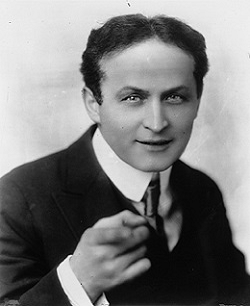
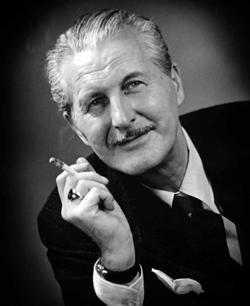
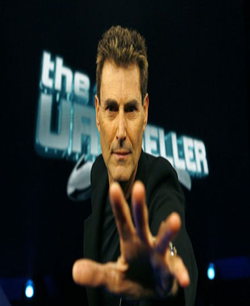
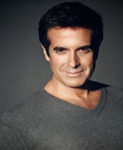
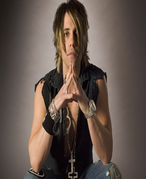

Выдающиеся фокусники
Гарри Гудини

Его настоящее имя Эрик Вайс и родился он в Висконсине в далеком 1874 году. Уже в 10 лет Гарри начал показывать публике различные карточные фокусы. Своим псевдонимом он обязан французскому иллюзионисту Роберту Гудина, а имя получил благодаря Келлару Гарри. Мировую славу Гарри Гудини принесла возможность выбраться из любых оков и наручников. Свое умение он всегда демонстрировал самостоятельно. Связанный или закованный в наручники он всегда очень быстро выбирался из оков. Его подвешивали за ноги, бросали в реку с 30-ти килограммовым грузом, заживо хоронили в гробу – он всегда выбирался. Гарри Гудини был настоящей звездой своего времени – именно это его и сгубило. Во время одного из трюков он погиб.
Эмиль Кио
Эмиль Теодорович Гиршфельд-Ренард стал родоначальником целой династии иллюзионистов.
Изначально Эмиля привлекал отнюдь не цирк, а кино и театр. И в 26 лет он стал актером театра миниатюр в Москве. Но постепенно в его жизни пришел и цирк, кем он там только не работал пока не пришел со своими фокусами на манеж. Свой псевдоним он придумал благодаря упавшей букве Н из слова Кино. Эмиль также предлагал расшифровку своего псевдонима, как “Киевский Известный Обманщик”. Целый ряд фокусов, которые придумал Кио до сих пор используются иллюзионистами всего мира. В 1960 году он стал лучшим иллюзионистом мира.
Дай Вернон

Иллюзионист вошел в историю, как человек, который полностью сделал великую легенду Гарри Гудини. Дело в том, что фокус с названием The Ambitious Card так и не был разгадан великим маэстро. Дай Вернон прожил скромную жизнь и никогда не зазнавался. Единственный о ком он так и не отозвался с почтением был Гарри Гудини.
Ури Геллер

Свою карьеру Ури построил на сверхестественном и мистике. Он научился сгибать ложки одним движением руки, но больше всего запомнился умением останавливать время. Именно благодаря ему Лондонский Биг Бен когда-то остановился, хотя видео подтверждения этому нет. Коллеги по цеху часто обвиняют Ури в мошенничестве, в том числе благодаря истории с Биг Беном. Сейчас фокусник уже сам признается, что устал от собственной паранормальной славы и хочет быть просто эстрадным иллюзионистом.
Дэвид Копперфильд

Его имя точно известно всем фокусникам и иллюзионистам. Он показывает свои фокусы – как
настоящие голливудские многомиллионные блокбастеры.Он прославился исполняя невероятные трюки. Именно он прошел через Китайскую стену, выбирался из пламени, покорил Ниагарский водопад, «украл» Статую Свободы в Нью-Йорке (смотреть видео) и самолет. Свои шоу он показывает с помощью многочисленной команды помощников. Свободное время Дэвид тратить на женщин и прожигание жизни.
Крис Энджел

Криса называют одним из самых успешных иллюзионистов со времен великого Гудини. Разносторонняя личность он не только фокусник и иллюзионист, но еще и йог, каскадер, гипнотизер, музыкант и режиссёр. Прославился Крис благодаря левитации, хождению по воде. Посвятивший всю жизнь магии сейчас он ведет собственное телевизионное шоу, имеет несколько магазинов и свой бар-ресторан. Кроме того, в 2006 году он выпустил книгу в которой раскрывает все свои секреты.
Дэвид Блэйн
Самый знаменитый представитель молодого поколения фокусников. Он с успехом пользуется «уличной магией» и показывает всему миру невероятные возможности организма. Самые известные номера Дэвида это – захоронение заживо в пластиковом контейнере, заморозка во льду (находясь в айсберге температура его тела достигла 33,7 градуса, что приравнивается к клиническому переохлаждению с необратимыми последствиями), 35-часовое стояние на вершине 22-метровой колонны, а также заточение без еды в ящике над поверхностью Темзы на 44 дня.
Подняться вверх